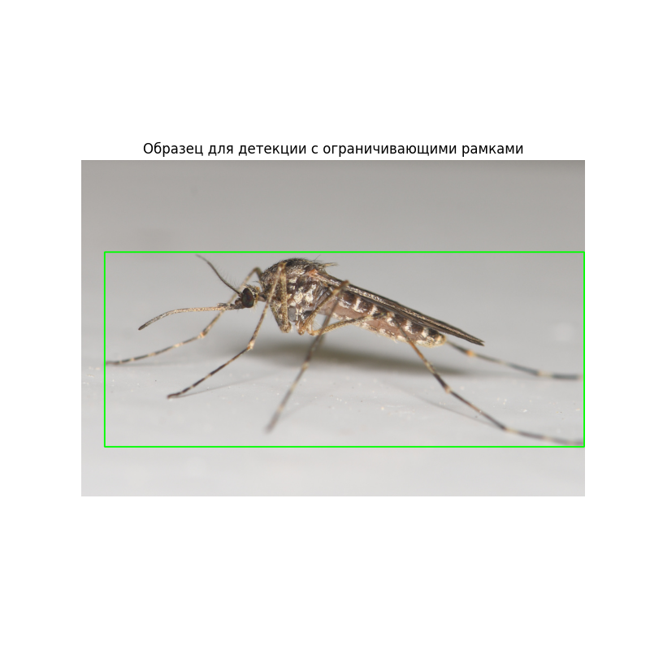

Note
Click here to download the full example code
Управление и загрузка наборов данных
В этом руководстве демонстрируется, как использовать DatasetsManager в CulicidaeLab
для взаимодействия с наборами данных, определенными в конфигурации библиотеки.
Установите библиотеку culicidaelab, если она еще не установлена
!pip install -q culicidaelab
Сторонние импорты
import matplotlib.pyplot as plt
import numpy as np
import requests
from collections import defaultdict
# Импорты CulicidaeLab
from culicidaelab import get_settings, ProviderService, DatasetsManager
1. Инициализация DatasetsManager
DatasetsManager — это высокоуровневый интерфейс для всех операций с наборами данных.
Для его функционирования требуются объект settings и ProviderService.
print("--- 1. Инициализация DatasetsManager ---")
settings = get_settings()
provider_service = ProviderService(settings)
manager = DatasetsManager(settings, provider_service)
print("DatasetsManager успешно инициализирован.")
Out:
2. Список доступных наборов данных
Вы можете легко просмотреть все наборы данных, настроенные в библиотеке.
print("\n--- 2. Список всех доступных наборов данных ---")
available_datasets = manager.list_datasets()
print(f"Доступные наборы данных, найденные в конфигурации: {available_datasets}")
Out:
--- 2. Список всех доступных наборов данных ---
Доступные наборы данных, найденные в конфигурации: ['segmentation', 'classification', 'species_diversity', 'detection']
3. Получение информации о конкретном наборе данных
Перед загрузкой вы можете получить метаданные конфигурации для любого набора данных.
print("\n--- 3. Получение информации о наборе данных 'classification' ---")
try:
info = manager.get_dataset_info("classification")
print(f" - Имя: {info.name}")
print(f" - Репозиторий Hugging Face: {info.repository}")
print(f" - Формат данных: {info.format}")
print(f" - Провайдер: {info.provider_name}")
# print(f" - Классы: {info.classes}") # Это может быть длинный список, поэтому мы его здесь опустим.
except KeyError as e:
print(e)
Out:
--- 3. Получение информации о наборе данных 'classification' ---
- Имя: mosquito-species-classification
- Репозиторий Hugging Face: iloncka/mosquito-species-classification-dataset
- Формат данных: imagefolder
- Провайдер: huggingface
4. Загрузка набора данных
Когда вы загружаете набор данных в первый раз, менеджер выполняет несколько действий:
1. Он находит соответствующего поставщика данных (например, HuggingFaceProvider).
2. Он дает указание поставщику загрузить набор данных в локальный кэш.
3. Он загружает набор данных из локального кэша в память.
При последующих вызовах менеджер будет использовать кэшированную версию, что значительно ускорит загрузку.
print("\n--- 4. Первая загрузка 'test' сплита набора данных 'classification' ---")
print("Это может занять некоторое время, так как будет запущена загрузка с Hugging Face.")
classification_data = manager.load_dataset("classification", split="test")
print("\nНабор данных успешно загружен!")
print(f"Тип возвращенных данных: {type(classification_data)}")
print(f"Характеристики набора данных: {classification_data.features}")
print(f"Количество образцов в 'test' сплите: {len(classification_data)}")
Out:
--- 4. Первая загрузка 'test' сплита набора данных 'classification' ---
Это может занять некоторое время, так как будет запущена загрузка с Hugging Face.
Dataset 'classification' not in cache. Downloading...
Existing dataset found at '/home/runner/.local/share/culicidaelab/datasets/mosquito_species_classification/test'. Removing it for a clean download.
Saving the dataset (0/1 shards): 0%| | 0/328 [00:00<?, ? examples/s]
Saving the dataset (1/1 shards): 100%|##########| 328/328 [00:00<00:00, 8794.21 examples/s]
Saving the dataset (1/1 shards): 100%|##########| 328/328 [00:00<00:00, 8757.16 examples/s]
Dataset 'classification' downloaded and path cached.
Loading 'classification' from path: /home/runner/.local/share/culicidaelab/datasets/mosquito_species_classification/test
Dataset 'classification' loaded successfully.
Набор данных успешно загружен!
Тип возвращенных данных: <class 'datasets.arrow_dataset.Dataset'>
Характеристики набора данных: {'image': Image(mode=None, decode=True), 'filename': Value('string'), 'label': Value('string')}
Количество образцов в 'test' сплите: 328
5. Список загруженных наборов данных
Менеджер хранит внутренний кэш наборов данных, которые были загружены в течение сессии.
print("\n--- 5. Список текущих загруженных (кэшированных) наборов данных ---")
loaded_list = manager.list_loaded_datasets()
print(f"Менеджер сообщает, что загружены следующие наборы данных: {loaded_list}")
Out:
--- 5. Список текущих загруженных (кэшированных) наборов данных ---
Менеджер сообщает, что загружены следующие наборы данных: ['classification']
Продвинутый уровень: Изучение статистики набора данных с помощью Hugging Face API
Оставшаяся часть этого руководства выходит за рамки основной функциональности библиотеки culicidaelab.
Она демонстрирует, как можно напрямую запрашивать API сервера наборов данных Hugging Face для получения
подробной статистики и создания информативных визуализаций для набора данных о видах комаров.
Это полезно для разведочного анализа данных (EDA).
Примечание: Следующий код не использует DatasetsManager и предоставляется в качестве дополнительного примера.
Определяем имя набора данных, который мы хотим изучить
Получение метаданных и статистики набора данных
Мы будем использовать вспомогательные функции для запроса конечных точек API для получения общих метаданных и подробной статистики.
def get_dataset_metadata(repo_id):
"""Получить общие метаданные для заданного набора данных с Hugging Face."""
api_url = f"https://datasets-server.huggingface.co/croissant-crumbs?dataset={repo_id}"
response = requests.get(api_url, timeout=10)
response.raise_for_status()
return response.json()
def get_dataset_statistics(repo_id, config_name="default", split_name="test"):
"""Получить подробную статистику по столбцам для сплита набора данных."""
api_url = (
f"https://datasets-server.huggingface.co/statistics?dataset={repo_id}&config={config_name}&split={split_name}"
)
response = requests.get(api_url, timeout=10)
response.raise_for_status()
return response.json()
print(f"--- Получение статистики для '{repo_id}' ---")
dataset_info = get_dataset_statistics(repo_id)
print("Статистика успешно получена.")
Out:
--- Получение статистики для 'iloncka/mosquito-species-classification-dataset' ---
Статистика успешно получена.
Визуализация распределения классов
Сбалансированный набор данных имеет решающее значение для обучения хорошей модели. Давайте визуализируем количество образцов для каждого вида.
def get_label_stats(dataset_info):
"""Извлечь статистику меток из dataset_info."""
label_stats = None
for column in dataset_info["statistics"]:
if column["column_type"] == "string_label":
label_stats = column["column_statistics"].get("frequencies", {})
break
return label_stats
def create_distribution_plot(
dataset_info,
repo_id,
color="teal",
figsize=(15, 10),
output_file="распределение_классов.png",
):
# (Код из оригинального скрипта остается без изменений)
# Получить частоты меток из dataset_info
label_stats = get_label_stats(dataset_info)
if not label_stats:
print("В dataset_info не найдена статистика меток")
return
# Отсортировать классы по количеству образцов
sorted_items = sorted(label_stats.items(), key=lambda x: x[1], reverse=True)
classes, counts = zip(*sorted_items)
# Создать фигуру с пользовательским размером
_, ax = plt.subplots(figsize=figsize)
# Создать горизонтальные столбцы
y_pos = np.arange(len(classes))
ax.barh(y_pos, counts, align="center", color=color, alpha=0.8)
# Настроить график
ax.set_yticks(y_pos)
# Отформатировать названия классов, заменив подчеркивания на пробелы и сделав заглавными
formatted_classes = [c.replace("_", " ").title() for c in classes]
ax.set_yticklabels(formatted_classes, fontsize=16)
# Добавить метки значений на столбцах
for i, v in enumerate(counts):
ax.text(v + 0.5, i, str(v), va="center", fontsize=20)
# Добавить заголовок и метки
plt.title(f"Распределение видов комаров в {repo_id}", pad=20, fontsize=18)
plt.xlabel("Количество образцов", fontsize=14)
# Настроить макет для предотвращения обрезки меток
plt.tight_layout()
# Сохранить график
plt.savefig(output_file, dpi=300, bbox_inches="tight")
print(f"График распределения сохранен как {output_file}")
# Показать график
plt.show()
# Создать график
create_distribution_plot(dataset_info, repo_id)
Out:
Визуализация таксономического распределения
Мы также можем визуализировать данные в более структурированном, древовидном формате, чтобы увидеть, как виды сгруппированы по родам.
def create_tree_visualization(
dataset_info,
figsize=(15, 10),
output_file="древовидное_распределение.png",
):
# (Код из оригинального скрипта остается без изменений)
# Получить частоты меток из dataset_info
label_stats = get_label_stats(dataset_info)
if not label_stats:
print("В dataset_info не найдена статистика меток")
return
# Сгруппировать виды по родам
genus_groups = defaultdict(list)
genus_totals = defaultdict(int)
for species, count in label_stats.items():
genus = species.split("_")[0]
genus_groups[genus].append((species, count))
genus_totals[genus] += count
# Отсортировать роды по общему количеству
sorted_genera = sorted(genus_totals.items(), key=lambda x: x[1], reverse=True)
# Создать фигуру
fig, ax = plt.subplots(figsize=figsize)
# Рассчитать коэффициенты масштабирования
max_count = max(label_stats.values())
min_count = min(label_stats.values())
max_genus_count = max(genus_totals.values())
min_genus_count = min(genus_totals.values())
# Рассчитать позиции
total_species = sum(len(group) for group in genus_groups.values())
y_positions = np.linspace(0.1, 0.9, total_species)
trunk_x = 0.15 # Позиция главной вертикальной линии
max_branch_length = 0.4 # Максимальная длина ветви
current_y_index = 0
text_offset = 0.02
# Цветовая карта для родов
colors = plt.cm.tab20(np.linspace(0, 1, len(genus_groups)))
# Нарисовать сегменты главного ствола между родами
for (genus, _), color in zip(sorted_genera, colors):
species_count = len(genus_groups[genus])
start_y = y_positions[current_y_index]
end_y = y_positions[current_y_index + species_count - 1]
# Нарисовать сегмент главного ствола для этого рода
ax.plot([trunk_x, trunk_x], [start_y, end_y], color="k", linewidth=3)
current_y_index += species_count
# Сбросить current_y_index для отрисовки видов
current_y_index = 0
# Нарисовать ветви для каждого рода
for (genus, total_count), color in zip(sorted_genera, colors):
species_list = genus_groups[genus]
species_count = len(species_list)
# Рассчитать позицию и длину ветви рода
genus_y = np.mean(y_positions[current_y_index : current_y_index + species_count])
genus_branch_length = 0.02 # Фиксированная длина для ветвей рода
# Рассчитать толщину линии на основе количества
thickness = 1 + 3 * (total_count - min_genus_count) / (max_genus_count - min_genus_count)
# Нарисовать ветвь рода
ax.plot([trunk_x, trunk_x + genus_branch_length], [genus_y, genus_y], "-", color=color, linewidth=thickness)
# Добавить название рода
ax.text(
trunk_x - 0.02,
genus_y,
f"{genus.title()}\n({total_count} всего)",
horizontalalignment="right",
verticalalignment="center",
fontsize=18,
fontweight="bold",
)
# Нарисовать вертикальный соединитель для видов
if species_count > 1:
ax.plot(
[trunk_x + genus_branch_length, trunk_x + genus_branch_length],
[y_positions[current_y_index], y_positions[current_y_index + species_count - 1]],
"-",
color=color,
linewidth=1,
alpha=1,
)
# Нарисовать ветви видов
for i, (species, count) in enumerate(sorted(species_list, key=lambda x: x[1], reverse=True)):
y_pos = y_positions[current_y_index + i]
# Рассчитать длину ветви вида на основе количества
species_branch_length = max_branch_length * 0.5 * (count - min_count) / (max_count - min_count)
# Нарисовать ветвь вида
species_thickness = 0.5 + 2 * (count - min_count) / (max_count - min_count)
ax.plot(
[trunk_x + genus_branch_length, trunk_x + genus_branch_length + species_branch_length],
[y_pos, y_pos],
"-",
color=color,
linewidth=species_thickness,
)
# Добавить название вида с родом
species_name = species.replace("_", " ").title()
ax.text(
trunk_x + genus_branch_length + species_branch_length + text_offset,
y_pos,
f"{species_name} ({count})",
verticalalignment="center",
fontsize=16,
)
current_y_index += species_count
# Настроить график
ax.set_xlim(0, 1)
ax.set_ylim(0, 1)
ax.axis("off")
# Добавить заголовок
plt.suptitle("Распределение видов комаров по родам и видам", y=0.95, fontsize=18)
# Добавить общее количество образцов и легенду
total_samples = sum(label_stats.values())
text_img = f"""Всего образцов: {total_samples}\n
Количество родов: {len(genus_groups)}\n
Количество видов: {len(label_stats)}\n
Длина ветви ∝ количеству образцов"""
plt.figtext(
0.02,
0.02,
text_img,
fontsize=18,
)
# Сохранить график
plt.savefig(output_file, dpi=300, bbox_inches="tight")
print(f"Древовидная визуализация сохранена как {output_file}")
# Показать график
plt.show()
# Пример использования
create_tree_visualization(dataset_info)

Out:
Total running time of the script: ( 0 minutes 3.209 seconds)
Download Python source code: tutorial_part_1_datasets_example.py
Download Jupyter notebook: tutorial_part_1_datasets_example.ipynb